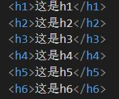
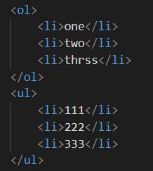
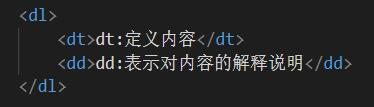
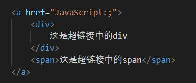
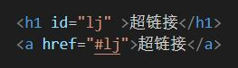

HTML不是一种编程语言，而是一种标记语言，标记语言是一套标记标签，HTML使用标记标签来描述网页
称为超文本标记语言（英语：HyperText Markup Language，简称：HTML）是一种用于创建网页的标准标记语言
HTML文件的后缀名为html和htm两种，例如：xxx.html，xxx.htm
如图，为HTML的结构图
!DOCTYPE html> 声明为 HTML5 文档
html> 元素是 HTML 页面的根元素
head> 元素包含了文档的元（meta）数据，如:meta charset="utf-8">定义网页编码格式为utf-8
title> 元素描述了文档的标题
body> 元素包含了可见的页面内容
HTML标签是由尖括号包围的关键词，标签通常是成对出现的
以尖括号关键字开头，又以尖括号斜杠关键字结束
比如：< html > 和 < /html >，这就是一个标签对
在标签对中的第一个标签是开始标签，第二个带有/的标签是结束标签
开始和结束标签也被称为开放标签和闭合标签
HTML的“标签”和"元素" 通常都是描述同样的意思.
严格来讲, 一个 HTML 元素包含了开始标签与结束标签
比如：< 开始标签 > 内容 < /结束标签 >，<p>P是段落标签</p>
当然，有成双成对的，肯定也有单身的，比如刚才图中的< meta charset="UTF-8" >
像这样只有一个的，称为自结束标签
在标签中可以设置标签的属性，只能在开始标签，或者自结束标签中设置
不能在结束标签中设置标签属性，属性是一个名值对结构，属性名 = 属性值;
例如：< font color="red" ;> 这是红色 < /font >
在font的开始标签中，font意为字体，color表示颜色，red为红色
因为color = "red";所以“这是红色的”这句话的颜色是红色
属性是用来设置标签的内容显示，属性名或者其他的属性需要用空格隔开
属性值不是乱写的，有些属性有属性值，有些属性没有
标签的ID属性，及class属性
ID属性：是元素的唯一标识，类似于身份证的存在
通过id属性值，找到页面中带有这个id属性的标签
每一个标签都可以加ID属性，但是不能重复
ID属性可配合CSS选择器设置样式，也可配合JavaScript使用
class属性：定义了元素的类名，可以理解为一个标识，用来标识特定的标签
通过class属性，也可以找到页面中带有这个属性的标签，可配合CSS选择器设置样式
p：p为段落标签
H：H是一个标题标签，有6个等级，1为最大，6为最小

span：行内标签，多个span标签，会显示在同一行
div：块标签，在页面中会独占一整块，或一整行，多个div标签会分开显示
html中的注释：< !-- 注释的内容不会显示出来 -- >
常用转义字符：
& nbsp：空格
& gt：大于号
& lt：小于号
html中可以创建列表，html的列表一共有三种
列表之间可以互相嵌套
1、有序列表
2、无序列表
3、定义列表
有序列表：使用ol标签创建
无序列表：使用ul标签创建
有序与无序，均可使用li表示列表项

定义列表：使用dl标签来创建定义列表
使用dt表示定义内容，dd表示对内容的解释说明

超链接可以让我们从一个页面跳转到另一个页面
或者是当前页面的其他位置
使用 a 标签来定义超链接，超链接是一个行内元素
在 a 标签中可以嵌套除只身以为的任何元素
比如：div、img、span等

超链接的属性：href=""，指定跳转到目标路径
比如：href="https://www.baidu.com/"
可以直接跳转到百度页面
超链接中的target属性可以用来指定超链接打开的位置，可选值有
_self：默认值，在当前页面中打开
_blank：在新页面中打开
比如：< a href="/my website/index.html" target="_blank" > 回首页
< /a >
点击之后会保持原有界面，并打开一个新的界面
也可以直接将超链接的href属性设置为#号
这样点击超链接以后页面不会发生跳转，而是回到当前页面的顶端
还可以使用JavaScript:;作为href的属性，此时点击不会有任何反应
可以做到一个占位效果，后续有需要时在具体设置
也可以跳转到页面指定位置，只需要将href属性设置为目标元素的ID
比如：超链接

ID属性是唯一的，不能重复
每一个标签都可以加ID属性
ID属性就是元素的唯一标识，同一个页面中不能出现重复的ID属性
图片标签可以向当前页面插入外部图片
图片标签即img标签，使用img标签来插入，img是一个自结束标签
img标签元素属于替换元素，基于块和行内元素之间，具有两种元素的特点
替换元素：指使用的内容不是自己本身的内容，而是使用引用的内容，根据元素的标签和属性，来决定元素的具体显示内容。
属性：src属性指定的是外部图片的路径
alt：是图片的描述，一般情况不显示，在图片加载失败时显示
比如：< img src="图片所在路径" alt="描述" >
搜索引擎会根据alt中的内容来识别图片，如果不写alt属性，图片则不会被搜索到
可使用width和helght来修改宽高
width：宽度（单位是px，像素）
helght：高度（单位px）
高度和宽度，如果只修改了一个，另一个会等比缩放
注：一般在pc端，不建议修改图片的大小，需要多大就弄多大
在移动端，需要对图片进行缩放
音频
audio标签用来向页面导入音频文件
音频文件引入时，默认是不允许操作播放
可使用控制属性来操作：
1、controls：是否允许用户操作播放
2、autoplay：音频是否自动播放
3、loop：音乐是否循环播放
如果设置了autoplay则打开页面的同时，音乐会自动播放
但是目前大部分浏览器都不会自动播放音乐
比如：< audio src="文件路径" controls loop> < /audio>
除了src可以指定外部文件以外，还可以使用source来指定文件
比如：
< audio controls>
<source src="文件路径">
< /audio>
在老版本的浏览器，不支持以上用法
但可以使用embed标签来引用音乐视频在老版本的浏览器中使用
用法：< embed src="文件路径" type="">
视频
视频与音频用法类似
视频的标签为：video
内联框架的标签为iframe
用于向当前页面展示其他页面
src：指定要展示的网页
frameborder：指定内联框架的边框
0表示无边框
1表示有边框
比如：< iframe src="页面链接或者路径" width="500" height="300" frameborder="1"> < /iframe>